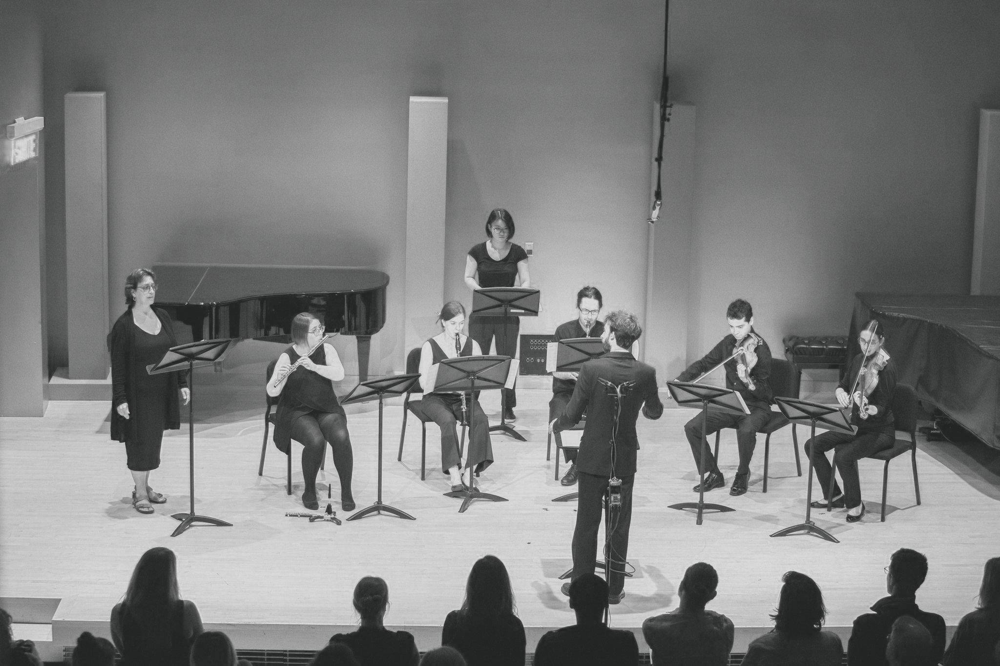

soprano, flute/piccolo, clarinet in B♭, soprano saxophone, singing bowl in F♯, violin, viola

Autumn is a setting of two short poems by Emily Brontë (1818-1848).
Fall, leaves, fall; die, flowers, away;
Lengthen night and shorten day;
Every leaf speaks bliss to me
Fluttering from the autumn tree.
I shall smile when wreaths of snow
Blossom where the rose should grow;
I shall sing when night’s decay
Ushers in a drearier day.
O come with me, thus rang the song,
The moon is bright in Autumn’s sky,
And thou hast toiled and laboured long,
With aching head and weary eye.
07.06.18 . 6:30pm EST . Montréal Contemporary Music Lab 2018: Concert 1 . Recital Hall, Montréal Conservatory of Music . 4750 Henri Julien Ave, Montréal, QC . CA
Ensemble Atlantica (Susan Dworkin, Soprano, Monique Aubé, Flute & Piccolo, Jossée MacInnis, Clarinet, Pascal Bard, Saxophone, Jing Wang, Singing Bowl, Francisco Eduardo Barradas Galvan, Violin, Sarah de Niverville, Viola), conducted by Baptiste Boiron